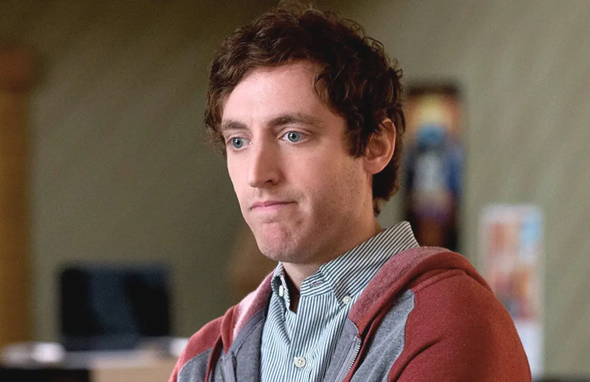
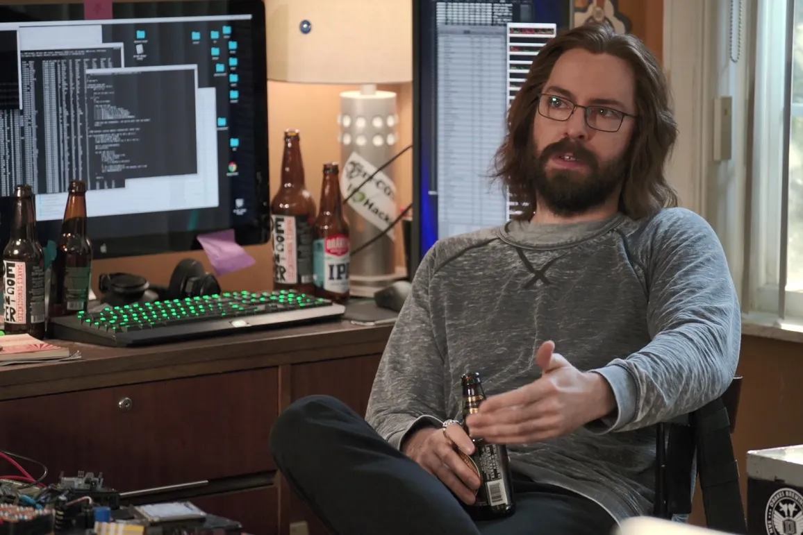
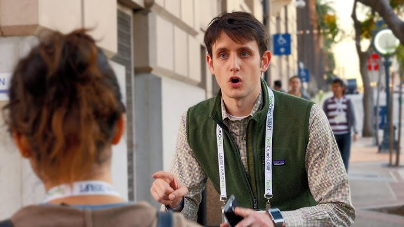
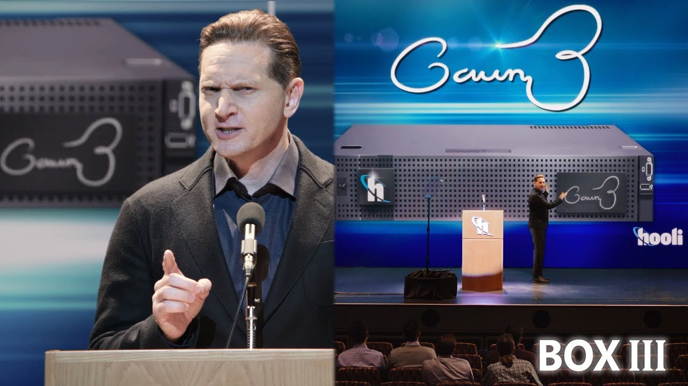

Richard Hendricks
O protagonista da série, um programador talentoso que cria uma
plataforma revolucionária de compressão de dados.

Erlich Bachman
O excêntrico investidor e proprietário da incubadora de startups
onde Richard e sua equipe trabalham.

Dinesh Chugtai
Um dos programadores da equipe, conhecido por sua rivalidade com
Gilfoyle e seu talento em desenvolvimento de software.

Bertram Gilfoyle
O engenheiro de sistemas da equipe, famoso por seu sarcasmo e
habilidades em segurança cibernética.

Donald "Jared" Dunn
O gerente de operações da equipe, sempre tentando manter a paz e a
organização entre os membros.

Gavin Belson
O CEO da gigante tecnológica Hooli, sempre tentando superar
Richard e sua startup.
Monica Hall
A investidora que apoia Richard e sua equipe, sempre tentando
equilibrar os interesses financeiros e éticos.